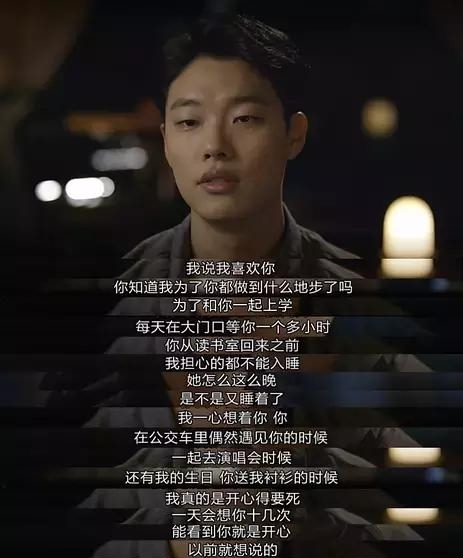

双门洞的一个胡同里，一群平凡人的故事。所谓胡同，就是用时间来造就朋友。
陆陆续续看完了《请回答》系列的三部，从《1997》到《1994》再到《1988》。最开始看的时候，是由于《请回答1988》在豆瓣上的超高评分以及朋友的推荐，一部2015年的剧能够超越一众经典，成为豆瓣上评分最高的韩剧，着实吸引了我。
一部优秀的艺术作品，能够让人产生共鸣，《请回答1988》在这一点上，确实做到了。以1988年汉城奥运会为背景，讲述住在首尔市道锋区双门洞的五个家庭的故事，涵盖了亲情、友情、爱情，甚至于邻里之情，有怀旧，有青春，有感动，有欢笑。每一个人都是这部剧的主角，活泼的德善，暖心的正焕，单纯的崔泽，孝顺的善宇，机灵的东龙，以及他们的父母，相处之间折射出的感动，能够温暖人心。
《请回答1988》中对情感刻画地非常好。成德善为了缓解三姐弟两个鸡蛋的尴尬，她主动跟妈妈说不用管她，生日附带着和姐姐一起过。在得知自己心心念念的奥运会去不了的时候，心中的委屈终于爆发，“为什么只有我叫成德善，我是那么可以随便对待也无所谓的人吗，为什么不给我煎荷包蛋，我也喜欢荷包蛋啊”。在奥运会结束的时候，德善看到了胡同口等着为她过生日的爸爸
宝拉参与游行示威被警察抓，母亲李日花在大雨中拉着警察求情说女儿如何聪明如何懂事从不让家里担心。胡同里的人下至小孩上至长辈都对宝拉暴烈的脾气有点怕，但妈妈知道自己女儿是表面冷但心很热。“偶尔觉得妈妈很丢人，妈妈为什么连起码的脸面和自尊心都没有呢。我都觉得上火。比起她自己，她有更想守护的，那就是我”

初雪夜告白。崔泽初雪约德善去看电影，善宇初雪向宝拉告白，崔泽爸爸初雪跟善宇妈妈说以后在一起过吧
附带一张《请回答1994》中初雪夜七封和娜静告别去日本的图片

正焕一直守护着德善。为了和他一起上学，下雪的时候在大门口等一个多小时；在很挤的公交车上强势保护德善；即使在圣诞节礼物互赠环节抽到的不是德善，也会为她准备心爱的粉红色手套；即使在圣诞节礼物互赠环节抽到的不是德善，也会为她准备心爱的粉红色手套；下着雨，也会拿着伞在街口等晚自习回来的德善；一个电话就可以跑到超远的江南去买单…但正焕就是不开口表白，德善也迷迷糊糊。正焕知道阿泽也喜欢德善的时候，他想都没想，就放弃了，因为他是一个内心很善良的人，对朋友非常好。最后，他确实说服了自己想要去向德善表白之后，却因为路上该死的红灯而错过了。正如他独白的那样子，搞怪的不是红绿灯，也不是时机，而是数不清的犹豫。

崔泽是胡同里的名人，是韩国国宝级的围棋大师，获得很多围棋冠军。从小生活中只有围棋，对围棋痴迷。但德善走进了他的世界，他愿意放下围棋，去走进德善的内心世界。不善语言，但有一颗善良的心。德善得知善宇喜欢的人是她姐，在家里哭得死去活来的时候，阿泽拖着下了十几小时棋疲惫的身体给德善打电话，约她去看电影。德善陪崔泽去中国参加围棋比赛，照顾崔泽。得知德善去看演唱会被放鸽子，崔泽气喘吁吁的赶过去，比正焕早一步。可能编剧更站在崔泽这一边，但是，正焕路上遇到红灯，与德善擦肩而过。崔泽在围棋上谦逊好学，对待朋友很善良，在所有人看来都是“好孩子”，但是他也有一些“坏孩子”的习惯，比如喜欢在围棋比赛前吸烟释放压力，和朋友们喝酒。在崔泽有两个世界，一个他的围棋世界，对外他是围棋大师，有极高的地位，受世人尊重；一个是他在双门洞胡同的世界，在这里他是一个白痴，连生活都不能自理，受朋友们照顾的对象。有很强烈的反差感。崔泽是这部剧中塑造得非常成功的角色，据说是以韩国历史上的著名围棋天才李昌镐为原型。
之前流行的一张佛系表情包，就来自剧中的正峰哥

《请回答1988》中邻里之间的感情描述得十分细腻，可以说是这部剧中的一个重点。五个家庭之间的相互关心、照顾、陪伴。编剧对于生活细节的观察细致入微，让观众在他们嬉笑怒骂、鸡毛蒜皮的平常生活中会心一笑，感同身受，仿佛描述的就是自己身边的生活。剧中亲情隐忍而深沉；邻里间互助关怀；青梅竹马间爱之深又极力逃开；无疾而终的暗恋；艰难的姐弟恋；最后终成正果的爱情变得尤为珍贵。几乎每一种感情都值得细细体味，让作为观众的我们重新对爱情、亲情、友情的思考。这个剧让人感到人与人之间的感情复杂而美好，亲情、爱情、邻里间的感情让人思考，更让人感动。
“当再次回到凤凰堂胡同之时，就如同流逝的岁月般，胡同也上了年岁，但，无论是我的青春还是这条胡同，再也无法回到过去了。岁月虽然流逝，一切终将过去，年岁渐长。青春之所以美丽，恐怕这就是原因，在刹那的瞬间，耀眼闪烁之后，再也无法回去。涌出眼泪的青涩岁月，我也有过……这种青春。”
”怀念那个时期，怀念那个胡同，并不只是因为怀念年轻时候的自己，而是因为那里有爸爸的青春，妈妈的青春，朋友们的青春，和我所有爱着的青春。也因为没能对那些再也取法聚到一起的年轻的风景，最后问候一声，而感到惋惜。如今对已经逝去的东西，对再也无法回去的时间，说一句迟到的问候。“
“你是否也想看看你许久不见的朋友？”
双门洞的故事结束了。
我们的故事还在继续，你所在的生活就是你的“请回答”
亲情、友情、爱情对于你的呼应，你听到了吗？
如果听到了
请回答！
（《请回答1988》中的一首歌，网易云音乐没版权。歌曲来源：qq音乐）